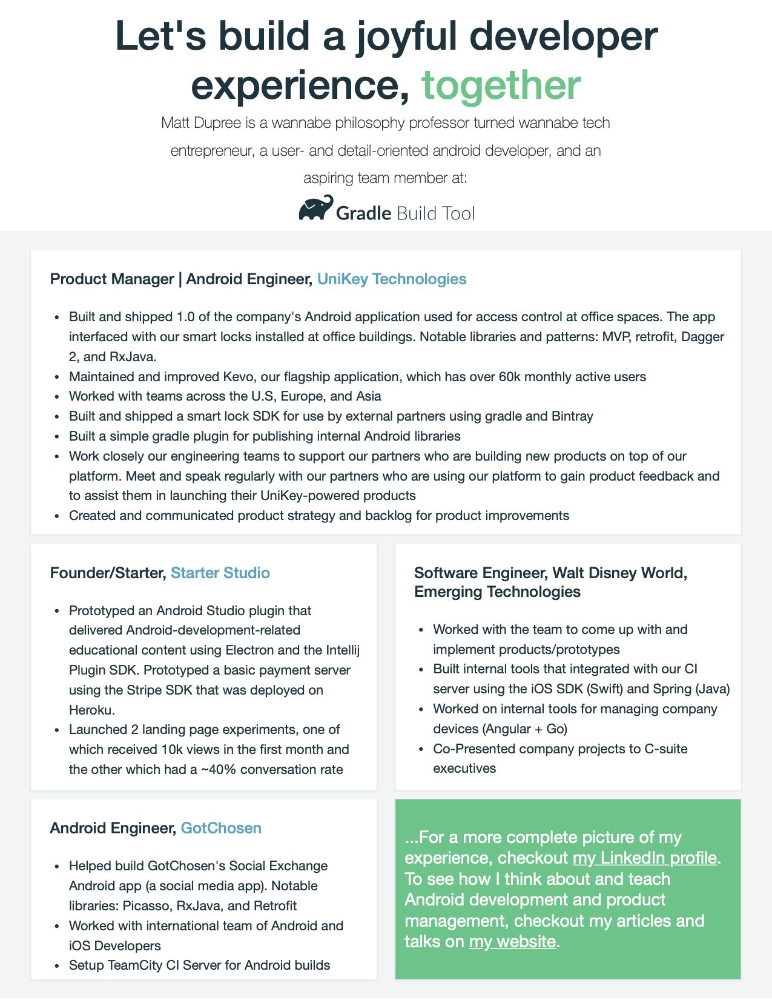
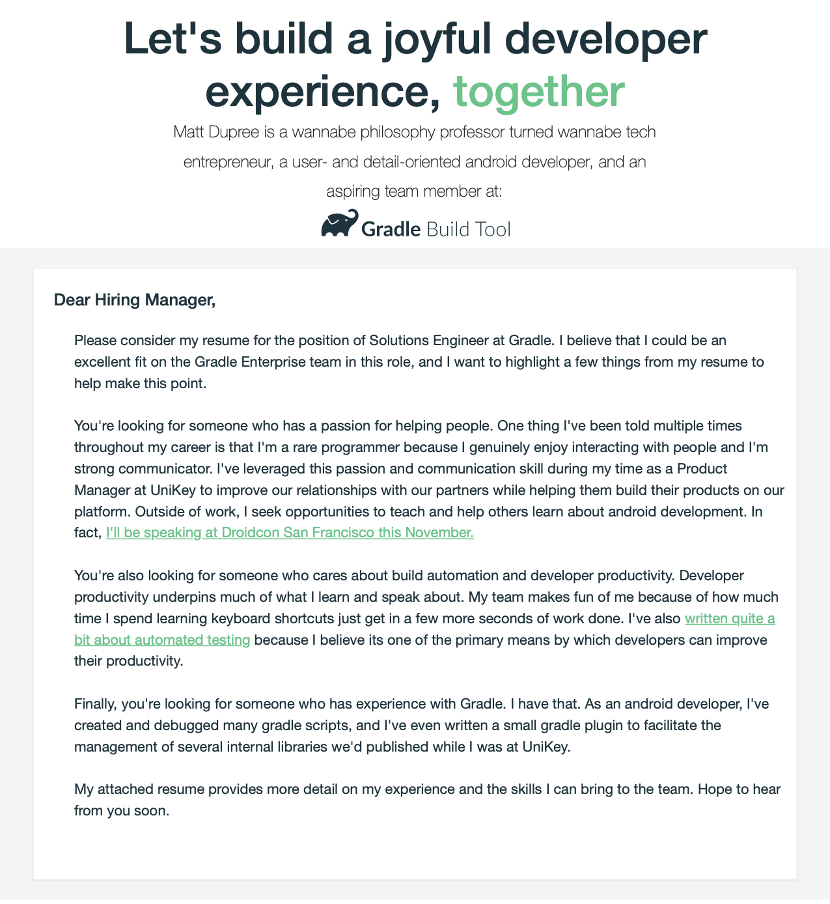

I wrapped up my job search recently, and I’m happy to say that I’ll be joining a YC-backed startup called “Heap.” I thought I’d share a little bit about my job search in case the information may benefit other job-seeking devs. I’ll go over the pipeline of places I applied to and the result of each application. I’ll also talk about things like salary, resume formatting, coding challenge prep, and interviewing. I don’t intend any of this to be advice. Rather, I hope it’ll be a data point that other job-seeking devs could use to inform their own expectations about their search.
Job search time: ~65 days
From the first application I filled out till I signed an offer, my search took about 65 days. My search probably took longer than the average search because it overlapped with the holidays. In some cases, moreover, I intentionally slowed down the application process so that I could have more time to prep for interviews.
Application Funnel
# of applications: 16
# of interviews: 7
# of offers: 2
I suspect I put in less applications than most people. I’ve always preferred to focus on a few specific companies instead of putting out 10s or 100s of mediocre applications. I also applied exclusively to remote or Orlando-based positions, so I didn’t have a ton of options. Here are the places I applied and the outcome of the application process:
- Gradle: Received an Offer. Didn’t take it
- Otis: Made it past the first interview. Didn’t continue in the process. They said I wanted too much money.
- Buzzfeed: “Moved forward with another candidate” after remote onsite
- Carvana: Did the first technical interview (no coding challenge). Thought it went really well. Still didn’t wind up moving forward.
- Ozone (contract): Never heard back
- Automattic: Close to receiving an offer (wrapping up their trial project), but withdrew from the process to accept the offer from heap.
- Square: Made it past the first technical interview, but not past the second. More on this in “Coding Challenges.”
- Dark: Never heard back
- Betterup: Didn’t make it past the resume stage
- Supergreat: Withdrew from hiring process after learning more about the company and having too many options to pursue
- Mozilla: Didn’t make it past the resume stage. May have dodged a bullet since they just laid folks off.
- Stripe: Didn’t make it past the resume stage
- Reddit: Made it past the first technical interview. Didn’t pass the onsite. More on this in “Coding Challenges.”
- Lantern: Made it past the first technical interview, withdrew before completing the take-home coding challenge to accept offer at heap.
- Ellisen Group (some random contracting group): Never heard back.
Resumes: Traditional vs. “Branded”
For some of these companies, I applied with a non-traditional, branded resume. For example, here’s what my Gradle resume and cover letter looked like:

The tagline at the top actually a riff on their company mission to “build joyful developer experiences.” The typography and colors, moreover, are identical to what they have on their website. The cover letter had similar fanciness:

From what I can tell, these resumes went over pretty well at the companies I applied to. The folks at Gradle never explicitly mentioned the resumes as standing out, but I did receive a few compliments at Reddit, Carvana, and Buzzfeed for them. Since I only used these types of resumes with 6 applications, I’d say glowing compliments on 3 out of 6 is pretty solid performance.
I also applied to some jobs through the Recurse Center, and they recommended a more traditional resume format. The job I ultimately took was actually one that used a traditional resume.
One quick note about my resume/work history: I actually had a brief stint as a product manager at UniKey.1 I was a bit worried that that experience would raise some eyebrows and keep me from moving forward with a few companies. That could have happened, but it seemed to be much less of an issue than I expected. I will say, however, that I think working as a lead/product manager for much of last year did dull my coding skills. I definitely found the coding challenges I worked on helpful in working out some of the rust from my coding fingers. More on that next.
Coding Challenges
Some of the companies I applied to used coding challenges to sift through applicants. Since I don’t have a computer science degree, these challenges were a bit scary. To prepare, I went through about 60 challenges, most of which were on Leetcode. I also did nearly all the challenges on arrays from Cracking the Coding Interview. I focused pretty much exclusively on array-type questions (my understanding is that these were most common question type), which hurt me in the Reddit onsite.
I had an interesting decision as I was applying to Square: I actually could have chosen a take home challenge over a more algorithmic-style technical interview. I chose the latter because I wanted to challenge myself and because I didn’t know the internal attitudes about the recent change in the interview process. I didn’t want to get a job via the new process and be considered a second-class programmer because the new interview process “wasn’t as difficult.”
Interestingly, I crushed the first technical interview. In fact, the interviewer said if I was in San Fran, they probably would have just brought me onsite straight away. Unfortunately, the second interview didn’t go well enough for me to move on to the onsite. I thought this was an interesting experience that serves as a nice concrete example of the capriciousness of technical interviews, which is something that Moishe Lettvin, an Xoogler who’s conducted over 250 interviews discusses in his talk.2
To be clear: I’m not complaining here. I could have done better on that interview if I’d prepared more and had a little more experience with that type of interview (that was only my third interview of that type in my entire career), and I’m not going to hate on companies that use coding challenges as a way to rank applicants. Measuring programming ability is hard, and coding challenges seem like a sane way of approximating programming ability, especially when you can afford to have false negatives. Square in particular was really great about providing feedback on interview performance, and the recruiter found my receptiveness to criticism really refreshing and invited me to interview again sometime.
I think if I had another 6 weeks to prep for interviews, I could have done well-enough on them to receive some additional offers. However, I’m very happy with the offer from heap, so I didn’t bother spending more time doing algorithm problems.
Speaking of heap, their coding challenge for their interviews was super interesting and fun. They did a great job of choosing problems that both require some algo/data structure knowledge and feel like problems you’d actually solve on the job.
“Career Capital” Review
Cal Newport coined the phrase “career capital,” and I’ve found it to be a useful metaphor for understanding actions that promote career growth. It’s hard to have an accurate view of the relative value of your career capital portfolio until you actually look for a job. After going through the job hunt process, I saw that:
- Speaking at conferences is indeed a great way to grow your career. I actually met the reddit folks at a conference I spoke at last November. They were impressed that I was speaking and that definitely helped me land the technical and onsite interviews.
- This blog did come in handy during the job hunt. When I started the trial process at automattic, I was nervous to find that there were several other folks working on trial projects and I was worried about standing out. However, when I started the project several people mentioned that they were familiar with me through my blog and said that it was a good blog.
- While I was happy this blog helped a bit during the job search, I think I’ve actually over-invested in writing as a career capital category. For a while, I was writing once a week. Lately I’ve done much less than that. My plan for 2020 is to publish 8 posts and to focus more on other career-growing activities like improving my algorithm/data structure knowledge and doing some open source work. There are lots of folks who don’t value blogs at all when it comes to evaluating your skill. They, understandably, want to see code.
- Attending the recurse center early in my career was a great decision. I learned a ton while I was there, which of course made me a more attractive hire and effective employee. I had several interviews at companies recursers worked at, and I even had one interview where the interviewer was also (unexpectedly) a recurser. RC works with companies that I’m not sure I would have discovered on my own, and those companies are doing neat things and seem to have really awesome cultures. The RC jobs team was also very helpful and encouraging during the job hunt process.
- All of the little side projects3 I’ve done with react, node, and javascript really paid off. I actually couldn’t use Kotlin for my remote all-day interview at heap. I used javascript instead and did really well. It also opened up the door for me to do non-android work, which I’m really excited about.
Negotiating the offer
I think this is obvious, but I still run into people who are uncomfortable negotiating, so I’ll say this: I negotiated. I countered the initial offer. I’m glad I did. Josh Doody’s talk was helpful here. This is the second time in my career I’ve used his framework for salary negotiation.
-
I actually did also apply to 3 product manager positions. None of them panned out. Made it to an interview stage at one company, and I thought it went quite well. Apparently, it didn’t go well enough. I’m glad. I’m happy where I wound up. ↩︎
-
At one point in the talk, Lettvin says that once an internal recruiter played a trick on them and gave them their own hiring packets. The committee voted not to hire anyone who was on the hiring committee. Lettvin also repeated an idea from his colleague Steve Yegge that for any person who is working at Google, you could easily find 5 people there who would not have hired that person. He said all of this to accompany a slide with the words “noisy,” “inaccurate,” and “arbitrary,” all of which were meant to describe the interview process at Google. Yikes. Strong words. ↩︎
-
One of those side projects, by the way, was actually a web app that allows me to crank out these branded resumes easily. ↩︎